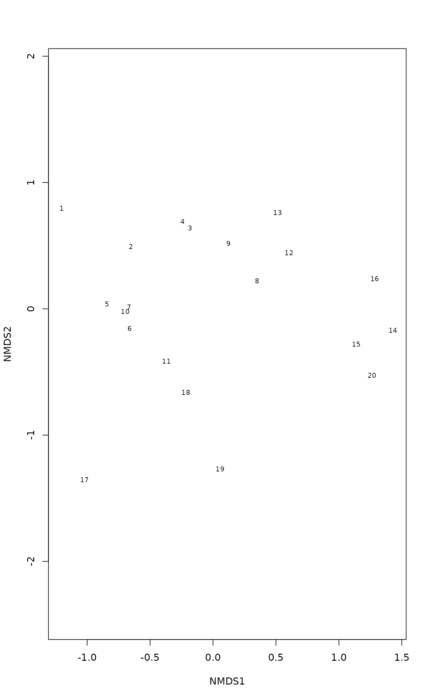

Global and Local Non-metric Multidimensional Scaling and Linear and Hybrid Scaling
monoMDS.RdFunction implements Kruskal's (1964a,b) non-metric multidimensional scaling (NMDS) using monotone regression and primary (“weak”) treatment of ties. In addition to traditional global NMDS, the function implements local NMDS, linear and hybrid multidimensional scaling.
Usage
monoMDS(dist, y, k = 2, model = c("global", "local", "linear", "hybrid"),
threshold = 0.8, maxit = 200, weakties = TRUE, stress = 1,
scaling = TRUE, pc = TRUE, smin = 1e-4, sfgrmin = 1e-7,
sratmax=0.999999, ...)
# S3 method for class 'monoMDS'
scores(x, choices = NA, ...)
# S3 method for class 'monoMDS'
plot(x, choices = c(1,2), type = "t", ...)
# S3 method for class 'monoMDS'
points(x, choices = c(1,2), select, ...)
# S3 method for class 'monoMDS'
text(x, labels, choices = c(1,2), select, ...)Arguments
- dist
Input dissimilarities.
- y
Starting configuration. A random configuration will be generated if this is missing.
- k
Number of dimensions. NB., the number of points \(n\) should be \(n > 2k + 1\), and preferably higher in non-metric MDS.
- model
MDS model:
"global"is normal non-metric MDS with a monotone regression,"local"is non-metric MDS with separate regressions for each point,"linear"uses linear regression, and"hybrid"uses linear regression for dissimilarities below a threshold in addition to monotone regression. See Details.- threshold
Dissimilarity below which linear regression is used alternately with monotone regression.
- maxit
Maximum number of iterations.
- weakties
Use primary or weak tie treatment, where equal observed dissimilarities are allowed to have different fitted values. if
FALSE, then secondary (strong) tie treatment is used, and tied values are not broken.- stress
Use stress type 1 or 2 (see Details).
- scaling
Scale final scores to unit root mean squares.
- pc
Rotate final scores to principal components.
- smin, sfgrmin, sratmax
Convergence criteria: iterations stop when stress drops below
smin, scale factor of the gradient drops belowsfgrmin, or stress ratio between two iterations goes oversratmax(but is still \(< 1\)).- x
A
monoMDSresult.- choices
Dimensions returned or plotted. The default
NAreturns all dimensions.- type
The type of the plot:
"t"for text,"p"for points, and"n"for none.- select
Items to be displayed. This can either be a logical vector which is
TRUEfor displayed items or a vector of indices of displayed items.- labels
Labels to be use used instead of row names.
- ...
Other parameters to the functions (ignored in
monoMDS, passed to graphical functions inplot.).
Details
There are several versions of non-metric multidimensional
scaling in R, but monoMDS offers the following unique
combination of features:
“Weak” treatment of ties (Kruskal 1964a,b), where tied dissimilarities can be broken in monotone regression. This is especially important for cases where compared sites share no species and dissimilarities are tied to their maximum value of one. Breaking ties allows these points to be at different distances and can help in recovering very long coenoclines (gradients). Functions in the smacof package also hav adequate tie treatment.
Handles missing values in a meaningful way.
Offers “local” and “hybrid” scaling in addition to usual “global” NMDS (see below).
Uses fast compiled code (
isoMDSof the MASS package also uses compiled code).
Function monoMDS uses Kruskal's (1964b) original monotone
regression to minimize the stress. There are two alternatives of
stress: Kruskal's (1964a,b) original or “stress 1” and an
alternative version or “stress 2” (Sibson 1972). Both of
these stresses can be expressed with a general formula
$$s^2 = \frac{\sum (d - \hat d)^2}{\sum(d - d_0)^2}$$
where \(d\) are distances among points in ordination configuration,
\(\hat d\) are the fitted ordination distances, and
\(d_0\) are the ordination distances under null model. For
“stress 1” \(d_0 = 0\), and for “stress 2”
\(d_0 = \bar{d}\) or mean distances. “Stress 2”
can be expressed as \(s^2 = 1 - R^2\),
where\(R^2\) is squared correlation between fitted values and
ordination distances, and so related to the “linear fit” of
stressplot.
Function monoMDS can fit several alternative NMDS variants that
can be selected with argument model. The default model =
"global" fits global NMDS, or Kruskal's (1964a,b) original NMDS
similar to isoMDS (MASS). Alternative
model = "local" fits local NMDS where independent monotone
regression is used for each point (Sibson 1972). Alternative
model = "linear" fits a linear MDS. This fits a linear
regression instead of monotone, and is not identical to metric scaling
or principal coordinates analysis (cmdscale) that
performs an eigenvector decomposition of dissimilarities (Gower
1966). Alternative model = "hybrid" implements hybrid MDS that
uses monotone regression for all points and linear regression for
dissimilarities below or at a threshold dissimilarity in
alternating steps (Faith et al. 1987). Function
stressplot can be used to display the kind of regression
in each model.
Scaling, orientation and direction of the axes is arbitrary.
However, the function always centres the axes, and the default
scaling is to scale the configuration of unit root mean
square and to rotate the axes (argument pc) to principal
components so that the first dimension shows the major variation.
It is possible to rotate the solution so that the first axis is
parallel to a given environmental variable using function
MDSrotate.
Convergence Criteria
NMDS is iterative, and the function stops when any of its
convergence criteria is met. There is actually no criterion of
assured convergence, and any solution can be a local optimum. You
should compare several random starts (or use monoMDS via
metaMDS) to assess if the solutions is likely a global
optimum.
The stopping criteria are:
maxit:Maximum number of iterations. Reaching this criterion means that solutions was almost certainly not found, and
maxitshould be increased.smin:Minimum stress. If stress is nearly zero, the fit is almost perfect. Usually this means that data set is too small for the requested analysis, and there may be several different solutions that are almost as perfect. You should reduce the number of dimensions (
k), get more data (more observations) or use some other method, such as metric scaling (cmdscale,wcmdscale).sratmax:Change in stress. Values close to one mean almost unchanged stress. This may mean a solution, but it can also signal stranding on suboptimal solution with flat stress surface.
sfgrmin:Minimum scale factor. Values close to zero mean almost unchanged configuration. This may mean a solution, but will also happen in local optima.
Value
Returns an object of class "monoMDS". The final scores
are returned in item points (function scores extracts
these results), and the stress in item stress. In addition,
there is a large number of other items (but these may change without
notice in the future releases).
References
Faith, D.P., Minchin, P.R and Belbin, L. 1987. Compositional dissimilarity as a robust measure of ecological distance. Vegetatio 69, 57–68.
Gower, J.C. (1966). Some distance properties of latent root and vector methods used in multivariate analysis. Biometrika 53, 325–328.
Kruskal, J.B. 1964a. Multidimensional scaling by optimizing goodness-of-fit to a nonmetric hypothesis. Psychometrika 29, 1–28.
Kruskal, J.B. 1964b. Nonmetric multidimensional scaling: a numerical method. Psychometrika 29, 115–129.
Minchin, P.R. 1987. An evaluation of relative robustness of techniques for ecological ordinations. Vegetatio 69, 89–107.
Sibson, R. 1972. Order invariant methods for data analysis. Journal of the Royal Statistical Society B 34, 311–349.
Note
This is the default NMDS function used in
metaMDS. Function metaMDS adds support
functions so that NMDS can be run like recommended by Minchin
(1987).
Examples
data(dune)
dis <- vegdist(dune)
m <- monoMDS(dis, model = "loc")
m
#>
#> Call:
#> monoMDS(dist = dis, model = "loc")
#>
#> Local non-metric Multidimensional Scaling
#>
#> 20 points, dissimilarity ‘bray’, call ‘vegdist(x = dune)’
#>
#> Dimensions: 2
#> Stress: 0.07596745
#> Stress type 1, weak ties
#> Scores scaled to unit root mean square, rotated to principal components
#> Stopped after 62 iterations: Stress nearly unchanged (ratio > sratmax)
plot(m)
